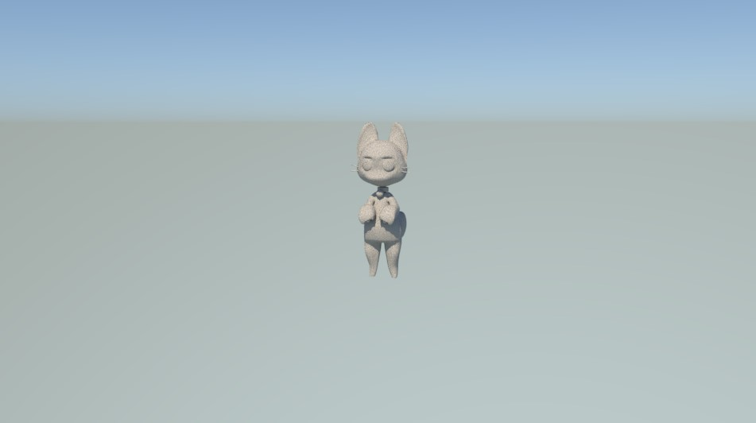
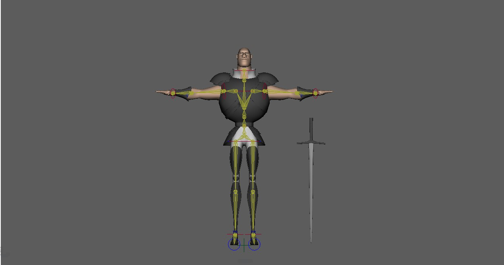
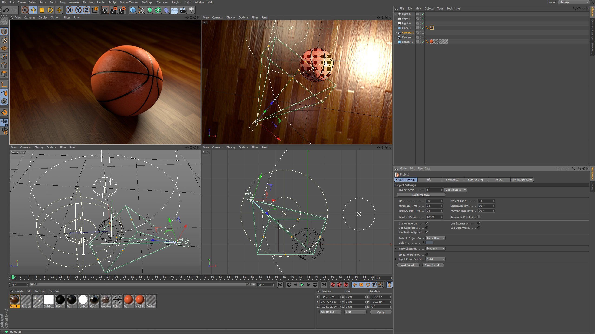

Must be able to create different models,
meet the details of the tasks assigned to be
completed, be on time to work, and have the
responsibility and attention to detail on the job.

Once the modeling is complete, bones must
be able to be inserted to allow the character's
body to move as naturally as possible.
It takes patience to perform a number of steps.

At work, talent in design and creativity.
To be able to design models and have the ability
to use 3d programs in a wide variety of tasks.
Have the skills and expertise through on-the-job training.